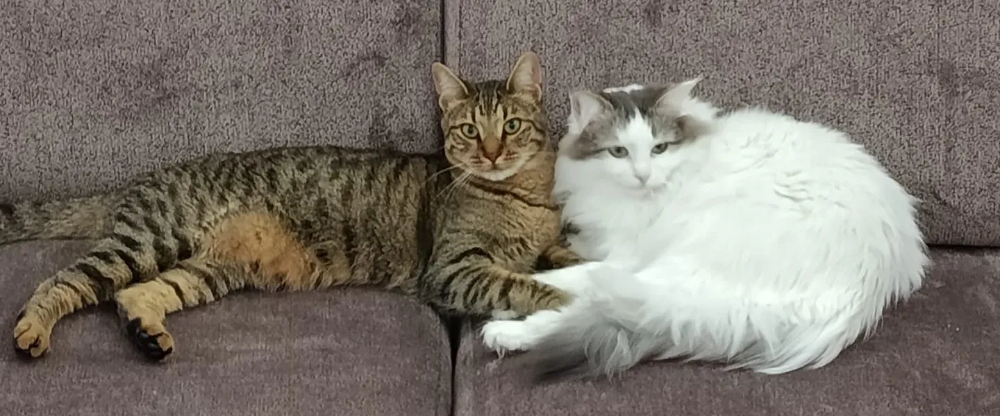

UI
Board, backlog, sprints, archive and a docs tree. Dragging a card writes the status field; the editor rewrites only the block you changed and leaves the rest of the file exactly as it was written.
No external service · no MCP · just markdown
docs/ folder.
Every task is a .md file: it lands in the same commit as the code, travels on the same branch and is searchable with grep. Sütlaç adds a local board, a
CLI and Claude Code skills that open, hand out, collect and close the work.
$ bunx sutlac init --prefix KES
$ bunx sutlacBoard, backlog, sprints, archive and a docs tree. Dragging a card writes the status field; the editor rewrites only the block you changed and leaves the rest of the file exactly as it was written.
list, next, check: small commands that give an agent and a human the same one-line answer. No runtime dependencies, just Bun.
Six skills carry a task through its whole life: search and open, pick up, hand out to parallel sessions, do it in a worktree, collect and merge, close with evidence.
Run it at the repo root. It creates docs/config.json, the format docs and empty folders, and never touches a file that already exists.
bun add -d sutlac
bunx sutlac init --prefix KES --title "Project Docs"As a Claude Code plugin (skills appear as /sutlac:task-open, hooks come along):
/plugin marketplace add omer-genc/sutlac
/plugin install sutlac@sutlacor by copying the files into the repo (.claude/skills/, .claude/hooks/sutlac/, settings.json):
bunx sutlac skillsThe skills assume nothing project-specific. Put your check command (e.g. bun run check), commit style and any parallel-work rules in the root CLAUDE.md; they read it from there.
The main session plans, decides and is the only one that writes docs/. Sub-sessions work in their own worktrees, do the task and leave a report.
/task-openOpenSearches existing tasks first and doesn't open a duplicate. Describes behaviour in product terms, with observable acceptance criteria./task-startStartSummarises the active sprint and backlog, moves the chosen task to in-progress, reads the code and says what it plans to do./task-dispatchHand outChecks that tasks don't overlap, then starts a separate worktree session for each one./task-workDoIn the sub-session: builds on its own branch, tests, commits, and writes evidence and any bugs it found to .worktree/report.md./task-collectCollectChecks the report against the diff, merges with your approval, runs the checks and files the report's findings as tasks./task-closeCloseAsks for evidence for every acceptance criterion. A task that still needs trying in a real environment becomes review, not done.| Command | What it does |
|---|---|
sutlac | Opens the UI. --port 4400, --no-open, --dir <docs> |
sutlac init | Creates the docs/ skeleton. --prefix, --title, --dir |
sutlac list | Open tasks, one per line. --all, --tag, --json |
sutlac next | Next task number |
sutlac check | Verifies that paths and image links mentioned in your docs (CLAUDE.md, skills, agents, knowledge) exist in the repo |
sutlac skills | Copies the skills and hooks into .claude/. --no-hooks, --to |
$ bunx sutlac list
# active sprint: 3 Sprint 3 — Checkout flow
# task|status|priority|tags|sprint|title|comments|last comment
KES-120|in-progress|normal|mobile,api|3|Order status shows the wrong value|0|
KES-98|review|normal|web|3|Branch users only see their own orders|2|2026-01-15 21:30docs/
├─ config.json prefix, tags, statuses
├─ tasks/ KES-1.md, KES-2.md …
├─ sprints/ sprint-1.md …
├─ knowledge/ lasting knowledge
├─ decisions/ 0001-short-title.md
└─ images/ <content hash>.png---
id: KES-12
title: Order list ignores the branch scope
status: todo
tags: [api, web]
priority: normal
sprint: 3
created: 2026-01-15
closed:
---
## Context
## Acceptance
1. Branch users only see their own branch.
## Comments
### 2026-01-15 21:30
Closing note, with the evidence.A task never moves; a finished one stays where it is, so KES-12 references don't break. The archive is computed, files aren't moved.
Sütlaç is the fluffy white one on the right. Fındık, the tabby on the left, keeps an eye on the backlog. In Turkish the names mean rice pudding and hazelnut.
